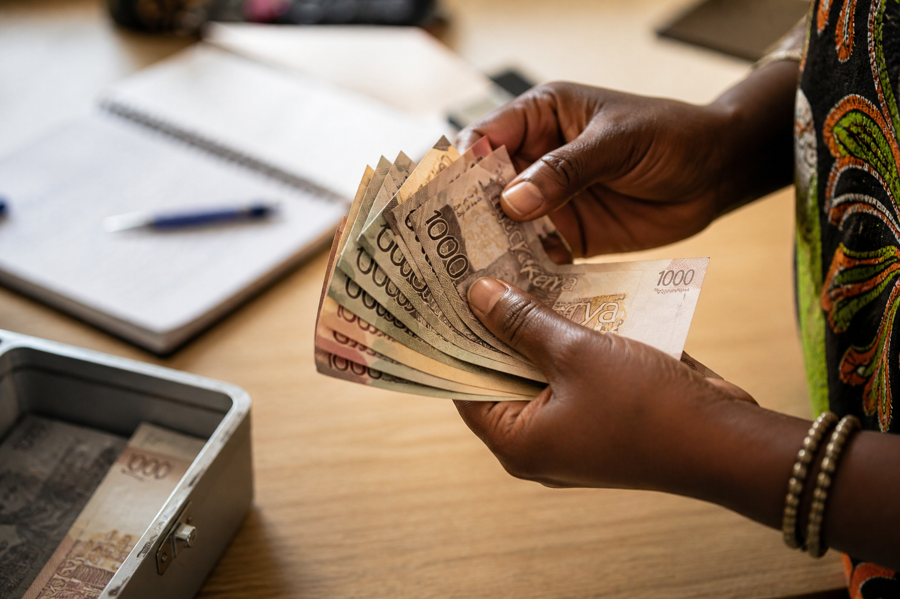
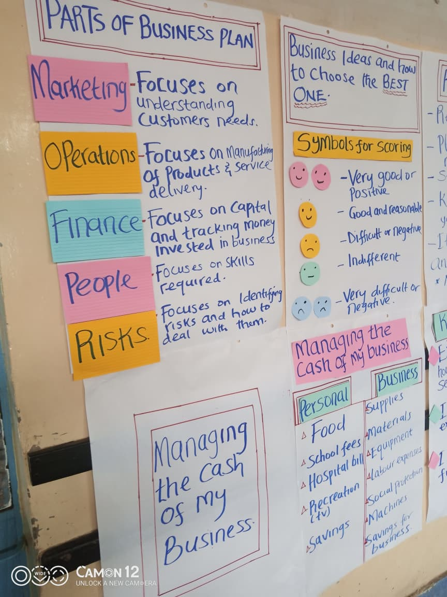
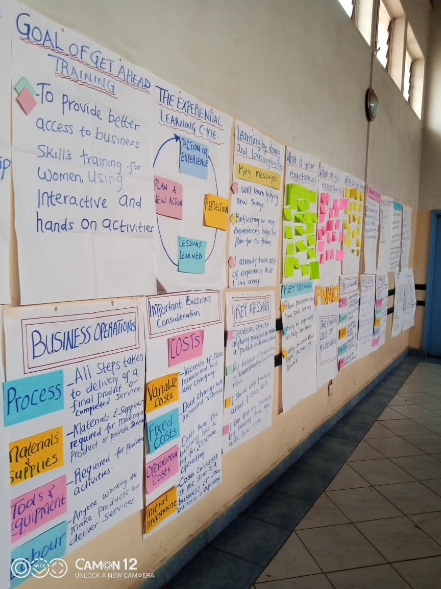

ECONOMIC &
FINANCIAL
INCLUSION
Building pathways from survival-based livelihoods to stable, sustainable income through skills, savings, and market opportunity.
From Survival to Stability
Financial exclusion traps families in cycles of poverty. Our program combines skills training, savings groups, financial literacy, and market linkages to create lasting economic independence.
In Mathare, many households live in conditions marked by high unemployment, low and unstable incomes, and limited access to formal financial services. Most residents rely on informal work that is unpredictable and poorly paid.
Access to savings, credit, and insurance is severely limited, which means families often lack a financial cushion to cope with emergencies such as illness, job loss, or school fees. These challenges continue to trap many families in cycles of poverty and economic vulnerability.
Our Community Economic and Financial Inclusion Empowerment Program creates direct pathways to sustainable livelihoods and financial stability for women, youth, and families in Mathare.

Trapped by Financial Exclusion
In Mathare slums, many households live in conditions marked by high unemployment, low and unstable incomes, and limited access to formal financial services. Most residents rely on informal work that is unpredictable and poorly paid, making it difficult to meet daily needs or plan for the future. Access to savings, credit, and insurance is also limited, which means families often lack a financial cushion to cope with emergencies such as illness, job loss, or school fees. These challenges continue to trap many families in cycles of poverty and economic vulnerability.

Skills, Savings, Literacy, and Markets
Our Community Economic and Financial Inclusion Empowerment Program in Mathare is designed to respond directly to these realities by creating pathways to sustainable livelihoods and financial stability. The program supports community members—especially women and youth—to develop income-generating activities and strengthen small businesses through practical training and mentorship.
We promote financial inclusion by strengthening community savings groups, where members save collectively and access affordable loans to invest in businesses, education, and household needs. This approach builds financial discipline while also creating a reliable safety net within the community.
In addition, we provide financial literacy training to equip participants with essential skills in budgeting, saving, responsible borrowing, and basic business management. We also support market linkages, helping small entrepreneurs connect their products and services to wider customer bases.
By combining skills development, access to finance, and market opportunities, the program helps residents of Mathare transition from survival-based livelihoods to more stable and sustainable sources of income. This ultimately strengthens household resilience, promotes financial independence, and supports long-term community transformation.
Expected Outcomes
Financial independence is not just economic — it transforms how families live, plan, and dream.
Sustainable Income
Participants transition from unstable informal work to consistent income through trained skills and supported businesses.
Savings Culture
Community savings groups create financial discipline, collective wealth, and a safety net for emergencies.
Financial Literacy
Participants gain essential skills in budgeting, saving, borrowing responsibly, and managing a business.
Market Linkages
Small entrepreneurs connect to wider markets, turning local products and skills into reliable revenue streams.
Business Growth
Mentored business owners grow beyond survival — employing others and contributing to Mathare's local economy.
Community Transformation
As more households achieve financial stability, Mathare's community resilience and shared prosperity grow together.
Build Financial
Independence in Mathare
Your support funds savings groups, financial literacy training, and market linkages that move families from survival to stability.